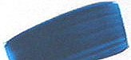
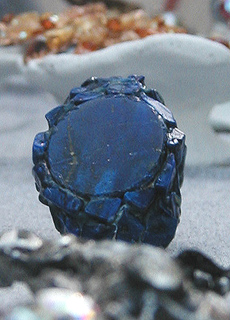
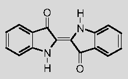
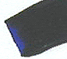
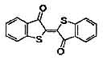
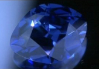
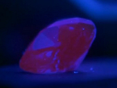

Les bleus moyens et froids
English text

En introduction, on dira d'abord que si
l'oxyde de cobalt est le principe colorant des deux pigments, l'un,
l'antique smalt (voir
ci-dessous), est siliceux (enserré dans du verre), l'autre, le bleu de
cobalt, est alumineux.
Le
bleu de cobalt
Composition typique : oxyde de cobalt +
oxyde d'aluminium. On le nomme aussi, à tort paraît-il, aluminate de
cobalt.
Concernant les synthèses ultérieures et
actuelles, on décrit plusieurs procédés mais ils sont tous associés à une
calcination (1300°C environ). Le principe semble en effet toujours
d'enserrer du cobalt oxydé dans une masse
d'alumine.
Le
cobalt oxydé étant
l'un des plus puissants siccatif pour la peinture à l'huile, le rapport
quantitatif entre masse alumineuse et cobalt est déterminant. Dans
l'ensemble, on considère cette couleur comme effectivement
siccative au sens
propre. Le contact entre l'oxyde de cobalt et l'huile crée des
"différentiels" de siccativation, provoquant craquelures, plissements et
autres accidents. Une solution possible - parmi d'autres - à ce problème
consiste à appliquer la pâte huile/cobalt entre deux couches de glacis
isolant en respectant pour chaque couche un temps de siccativation
particulièrement "prudent".

Le bleu de cobalt est plutôt franc. Il est
généralement moins violacé que
l'outremer bien que
sa couleur, associée à la proportion cobalt/alumine, ne soit pas une
référence bien fixée.
François Perego
décrit cependant une caractéristique bien spécifique : "il absorbe
totalement du vert-jaune au rouge moyen", ce qui peut expliquer cet
"aspect franc" reconnaissable.
Certains auteurs le décrivent comme peu
couvrant, d'autres le trouvent opaque, mais la composition du pigment
pourrait jouer un rôle dans ces différences d'appréciation. En fait, le
procédé de fabrication nécessite un savoir-faire déterminant grandement sa
qualité.
Précisément, certains cobalts peuvent
sembler un peu "pauvres", voire ternes, à tout le moins sans grand intérêt.
Comme l'écrit non sans euphémisme
Xavier de Langlais,
"(...) il acquiert de la distinction dans les mélanges avec le blanc"
- à noter que le
bleu
céruleum est lui-même un cobalt rehaussé le plus souvent au
blanc d'étain. Selon le même auteur, il pourrait contracter une variante
de la "maladie
de l'outremer" dans les mêmes conditions que ce pigment.
Comme dans le cas du
bleu outremer, la
synthèse de cette couleur a fait l'objet d'un concours organisé par la
Société d'Encouragement pour l'Industrie Nationale : il fallait un bleu
autorisant davantage d'emplois que le
smalt.
C'est Thénard, en 1802, qui le remporta.
La distribution élargie d'imitations du bleu
de cobalt (typiquement une combinaison d'aluminosilicate de sodium type
outremer, d'oxyde de zinc et de phtalocyanine de cuivre) ne correspond pas à
un problème de toxicité mais en premier lieu à la nécessité de proposer un
produit de couleur sensiblement équivalente à plus faible coût.
Il est de toute façon peu recommandé de se
procurer un bleu de cobalt authentique s'il n'est pas de qualité
réellement supérieure car il n'apportera rien de majeur par rapport aux
imitations alors qu'il coûtera vraiment beaucoup plus cher et sera plus
difficile d'emploi si le procédé utilisé est la peinture à l'huile.
Le mot cobalt proviendrait de
kobold ou de termes germaniques proches
désignant de mauvais génies miniers accusés de substituer ce minéral à
celui recherché par les mineurs (l'argent selon certains, le cuivre selon
d'autres).
Autre explication : la présence de cobalt serait associée à celle d'arsenic
et
ce sont les vapeurs de celui-ci, lors de calcinations minières, qui seraient
à l'origine de cette appellation.
Le smalt ou smalte
Synthèse à base de cobalt et de silice (à
distinguer du bleu de cobalt,
voir
ci-dessus).
Les auteurs évoquent un relatif succès de
cette couleur au XVème ou au XVIème siècle. On peut
dire, d'une certaine manière, qu'il revêt deux formes à cette époque :
* c'est un
oxyde pour la verrerie et les glaçures à base de phosphate ou de chlorure
de cobalt
* c'est un
pigment pour la peinture, créé sur la même base : on produisait un verre
teinté avec cet oxyde, après quoi on le broyait. Au XVIIème siècle,
l'aspect "miroitant" du smalt était exploité en peinture décorative pour
orner les métaux. Aujourd'hui, cet aspect est totalement absent de la
plupart des variétés produites à cause d'un broyage devenu beaucoup trop
fin, trop parfait, lui conférant une grande banalité.
Cependant cette "vogue du smalt"
occidentale relativement récente ne doit pas faire oublier des fabrications
beaucoup plus anciennes. Les emplois dans les arts du feu sont très anciens. On
mentionne la Babylone du XVIIème siècle BC, l'Egypte du XVIème BC. La réduction
en poudre pigmentaire serait nettement plus récente (à partir du XIème AC).
Ce pigment était (et
demeure) très coûteux et d'un emploi malaisé. Sa permanence est mise en doute
par certains auteurs. Dans le domaine de la peinture, l'une des argumentations
est la suivante : le smalt serait produit avec du verre
potassique et non
sodique (les raisons
demeurent obscures et l'information n'est pas confirmée), donc le potassium
inclus dans le verre pourrait
saponifier des
corps gras tels
qu'une huile à peindre, une cire ou de l'oeuf. Quant au domaine des arts du feu,
le même potassium aurait tendance à se dissoudre en présence d'eau ou d'acide.
Là aussi, l'information n'est absolument pas confirmée et si vous disposez
d'informations précises, n'hésitez pas à
nous contacter.
-->
Une confirmation remarquable nous est finalement parvenue. Lire
passage in Courrier des Lecteurs.
La teinte du smalt n'est pas
particulièrement plus froide que celle du lapis lazuli, contrairement à ce
que certains auteurs affirment. D'autres auteurs lui attribuent une couleur
plus terne que celle du bleu de cobalt mais on ne reprendra pas ces propos
tant les processus de fabrication sont variables et déterminants dans un cas
comme dans l'autre. Il existe de beaux smalts, certains cobalts sont un peu
banals et vice versa. De plus, les couleurs ternes ne sont pas forcément
sans intérêt.
Le terme smalt signifie
émail en
francique
Le cas particulier du bleu caeruleum
Souvent considéré comme bleu chaud, sa
composition comme sa couleur l'apparentent pourtant bien plus à un bleu
moyen que par exemple le bleu de manganèse.
Pourtant, tenant compte de l'usage (très
discutable) qui veut qu'il soit employé à la manière d'un cyan primaire,
nous l'avons classé parmi les bleus chauds.
Cliquer ici
pour atteindre le texte qui lui est consacré.
Le lapis-lazuli,
dit outremer véritable
Étymologie
: du latin médiéval, signifiant "pierre d'azur"
Introduction
Il est encore plus cher que le
bleu de
cobalt, ce qui explique le succès d'une imitation - ou plutôt d'une
synthèse - devenue célèbre (l'outremer
contemporain,
qui fait l'objet d'un
article séparé). Il s'agit typiquement d'un thiosulfate de
silicate d'aluminium, de sodium et de calcium : (Na,Ca) Al, Si,O et SO, soit
une formule très sensiblement identique - à quelques variations près, voir
Les outremers,
famille de pigments - à la célèbre synthèse de Jean-Baptiste Guimet,
un aluminosilicate de sodium polysulfuré. Seule la présence ou l'absence de
calcium ou d'autres éléments et surtout la quantité de soufre diffèrent, et
c'est d'ailleurs, semble-t-il, en faisant varier cette teneur en soufre que
l'industrie aurait pu créer plusieurs type d'outremers.
Revenons à notre lapis.
D'après Anne
Varichon, "On lui donne le nom d'oltramarino
(venu d'au-delà des mers) par opposition à l'azurite,
désignée jadis comme azzuro citramarino
(bleu venu de ce côté-ci de la mer)."

Il s'agit d'une pierre semi-précieuse (photo
ci-contre, remerciements à
Catherine Lisack). Elle fut extraite dès 6000 BC dit-on, à Kokcha, une
haute vallée du Badakhshan, dans le Pamir afghan, à trois ou quatre cents
kilomètres seulement des sources de l'Indus. Mais à différentes époques,
d'autres gisements auraient été exploités en Perse et jusqu'en Chine et en
Sibérie.
Dans le passé, le coût d'un acheminement
difficile sur terre et sur mer s'ajoutait au difficile travail d'extraction.
Le lapis lazuli était fastueux, plus coûteux que l'or, ce qui explique
d'ailleurs sa présence dans les bijoux et masques funéraires des familles
royales égyptiennes.
L'antique mine afghane
Elle est toujours en service. La réserve,
aussi colossale que difficile à travailler, est à peu près inépuisable.
Les conditions d'exploitation sont toujours extrêmes à ce jour pour deux
raisons :
* la région
demeure l'une des plus dangereuses et inaccessibles au monde, tant parce
qu'il s'agit d'une zone isolée de haute montagne qu'à cause d'une
insécurité et d'une instabilité politique chroniques,
* la neige
empêche tout accès en dehors d'une partie de l'été.
Un documentaire filmé lors d'une expédition
à haut risque de Gary Bowersox (voir ci-dessous) montre quelques images
d'une vénérable galerie qui, sur des centaines de mètres, porte les
stigmates d'un travail rudimentaire. Les parois sont couvertes de suie car
les impressionnantes veines de minerai sont mises à découvert par projection
d'eau froide sur la paroi chauffée à l'aide d'une torche, ce qui provoque un
éclatement de la roche.
Références G. Bowersox :
* Le
trésor caché des pharaons (vidéo),
Gary Bowersox, réal. W. Knöpfler, Autriche 2001,
Media Program of the European Union
* Le site de
G. Bowersox,
gems-afghan.com (anglais)
La rareté du lapis lazuli sur notre planète
n'est pas la seule raison de son coût, quels que soient l'emplacement de la
mine et les difficultés d'acheminement : son extraction n'est guère
rentable. Il faut, dit-on, traiter 100 kg de roche pour obtenir 3 kg de
pigment (information non confirmée). Ce qui ne doit pas, de plus, faire
oublier les nécessaires opérations de purification, anciennement effectuées
à l'aide d'ammoniac
notamment.
En Europe occidentale, le
lapis-lazuli n'apparaît qu'au XIIème siècle AC via
Byzance. Dans l'Antiquité, Pline ne le mentionne même pas. Par contre,
l'Orient syro-anatolien l'emploie depuis le IXème BC pour le
travail du verre. Puis, au Vème AC, des artistes le broient et
s'en servent pour la première fois pour peindre, en Afghanistan
(informations
Anne Varichon).
L'Égypte ancienne le connaît
aussi, mais l'utilise sous forme de pierre alors que sur le plan
pigmentaire, elle en réalise une imitation (cf.
bleu
d'Egypte). Il est vrai que le lapis-lazuli est avant tout un superbe
minéral que l'on n'a pas forcément envie d'employer comme pigment. On peut
considérer le broyage de ce cristal comme une idée originale et audacieuse
qui ne vient pas facilement à l'esprit. C'est donc une
véritable découverte méthodologique majeure de la part des peintres afghans.
De fait, le même procédé sera appliqué à la
malachite,
à l'azurite
et à la
turquoise en Asie centrale et occidentale notamment.
Le lapis-lazuli est réputé -
et "seulement" réputé - stable dans tous les mélanges. Il contient du
soufre et sa purification n'est pas une opération simple... autant de faits
pouvant inciter à un peu de prudence sur ce point.
Aucun de nous ne l'a testé à
ce jour et nous ne disposons d'aucun témoignage réellement intéressant. Pour
nous écrire, cliquer ici.
Broyage
Jusqu'au XIIème siècle AC, le
procédé de broyage n'autorisait qu'un grain assez irrégulier et plutôt
grossier. L'invention d'un nouveau procédé de broyage ne fut peut-être pas
une si bonne idée, c'est du moins ce qui nous semble à nous qui disposons
aujourd'hui d'autres pigments bleus de la même catégorie, donc d'un choix.
Le lapis pourrait avoir été beaucoup plus beau
lorsqu'il émettait des rayons moins homogènes, plus cristallins. Cette
question est essentielle de nos jours pour qui voudrait se procurer cette
rare couleur. Elle se pose de la même
manière en ce qui concerne
la malachite,
l'azurite
et la
turquoise, mais aussi le
smalt.
L'utilisation qui en a été faite vers la fin
de Moyen-âge peut d'ailleurs paraître décevante. Le lapis était vendu en
pâte devenue homogène, mêlé de plâtre, de cires ou autres substances qui
altéraient sa teinte. Ce n'était plus qu'un produit marchand dont la
quantité étalée sur l'oeuvre peinte était spécifiée par contrat (source
Anne Varichon).
Tout témoignage
d'utilisation du lapis-lazuli sera le bienvenu.
L'indigo,
les indigos
Cette couleur dont
le nom est devenu un enjeu commercial (il suffit de taper "indigo" sur un
moteur de recherche pour s'en convaincre...) est assez particulière, un peu
mystérieuse. Le moins que l'on puisse dire est qu'elle a une histoire
chargée qui n'est d'ailleurs pas terminée. Elle est encore employée
aujourd'hui en Union Indienne comme il y a au moins 2000 ans, mais il y a
plus de 1000 ans, son simple nom excitait déjà les imaginations puisque l'on
l'usurpait en Occident pour désigner une autre substance (voir
ci-dessous).
Le terme indigo était déjà employé dans
l'Antiquité romaine.
Soit dit sous toute réserve, cette substance
tinctoriale aurait été réduite en poudre et utilisée par les peintres
d'alors et ceux du Moyen-âge. Cette information n'est absolument pas
confirmée. Au contraire, nous avons des raisons de penser qu'il y a
confusion :
l'indigo médiéval
(en fait sans doute antique) utilisé pour les miniatures n'est pas la
teinture d'origine indienne : il était produit à partir des feuilles d'isatis
tinctoria, dit la guède ou le pastel (lire
l'article du glossaire au sujet de ce
dernier mot aux multiples sens), une petite plante à fleurs jaunes. On
laissait fermenter des boules de feuilles (cocagnes) réduites en pulpe à
l'aide de moulins ou de procédés moins perfectionnés dans des temps plus
anciens. Les feuilles fraîches permettraient d'obtenir un produit beaucoup
plus coloré, mais dans les convois commerciaux elles ont d'innombrables
fois eu le temps de sécher et de perdre leur qualité. Le procédé
tinctorial (la "cuve" de guède) fait appel à un agent biologique, une
bactérie nommée Clostridium isatid.
Certains auteurs
évoquent aussi une substance mystérieuse d'un bleu violacé tirée d'un tout
aussi mystérieux "folium" ("la feuille", d'un arbre non précisé)
qui serait référencé dans des manuscrits médiévaux. Le mystère et les
confusions médiévales entourant les bleus violacés provient possiblement
du statut inconvenant que l'église d'alors réservait au violet, couleur
très proche (lire
l'introduction de l'article Violets et mauves).
Mais la
guède ne fut pas utilisée seulement au Moyen-âge et en Occident.
Probablement originaire de l'Asie occidentale, elle aurait été introduite
dans d'autres régions au néolithique. Elle aurait été connue dans une
vaste zone allant de l'Europe du Nord à l'Égypte et à l'Inde dès le IIème
millénaire BC (non confirmé).
En Égypte,
ce sont les Romains qui lui auraient substitué l'indigo "indien".
Si le pastel disparaît progressivement d'Orient,
sa présence en Occident s'est installée durablement bien que cette couleur
fut dénigrée, voire crainte par les Latins. Les légions romaines auraient
tremblé de peur face aux combattants celtes ou germains qui enduisaient
leur peau de teinture de guède. Curieusement, ce bleu aurait été réputé,
dans le monde celto-germanique, capable de chasser certains animaux et
certains esprits. Cela ressemble à une légende, mais quand on pense à
l'importance attribuée à la couleur dans le combat militaire il y a moins
de cent ans, la peur bleue des troupes de Rome devient plausible, d'autant
plus que d'autres frayeurs chromatiques, en d'autres lieux, sont bien
connues des historiens.
Bien
plus tard, du XIIIème au XVème siècle, isatis
tinctoria, devenu très en vogue grâce à l'instauration d'un nouveau
procédé de teinture, fit la fortune de différentes contrées productrices
en Europe (pensons par exemple au "Pays de cocagne", dans le Sud-ouest
français). Initialement teinture terne et de petit
teint dédaignée par les patriciens de la
Rome antique, les progrès techniques lui avaient fait acquérir une
certaine permanence.
Des indigos
en provenance d'Amérique entrèrent ensuite en concurrence et provoquèrent
un déclin progressif du pastel.
La substance
pigmentaire d'isatis tinctoria est en fait la même que celle que
l'on trouve dans l'indigofera tinctoria (l'indigo) : c'est
l'indican (voir
ci-dessous).
Lecture conseillée :
Le bleu guède sur Pourpre.com
Voir aussi
L'argile turquoise des mayas
L'indican nécessite un certain traitement,
certains adjuvants, pour être utilisé comme teinture car il est insoluble
dans l'eau. La complexité des procédés traditionnels de teinture à l'indigo
et surtout les différences de teintes obtenues peuvent partiellement
s'expliquer de cette manière.

L'indican est présent non seulement dans
les centaines de variétés
d'indigotiers (dont l'indigofera tinctoria n'est qu'un
représentant), mais aussi dans le
pastel,
seulement il se trouve en proportion vingt fois
moindre dans ce dernier. Cela pourrait expliquer l'aspect
réputé terne des teintures à la guède et l'aspect magnifique des teintures à
l'indigo, en dehors de problèmes de séchage intempestif durant les
transports. Si le progrès technique dans le traitement du pastel a pu
multiplier par dix son pouvoir tinctorial, il ne faisait quand même pas le
poids.
L'indican est toujours extrait dans
certaines régions par fermentation de feuilles humectées. Les adjuvants,
étant donné le nombre de cultures fabriquant des produits à l'indican et le
nombre de plantes concernées, sont innombrables et de natures étonnamment
différentes. La guède européenne, dès la période celtique, connaissait un
adjuvant qui d'ailleurs lui aurait donné mauvaise réputation à Rome :
l'urine humaine, encore utilisée paraît-il jusqu' au XXème siècle
AC.
La substance tinctoriale change lors de la
teinture. Elle passe d'un bleu chaud assez proche du
bleu de
Prusse à une couleur plus violacée.
Notons la grande similitude de la molécule
qui constitue le principe colorant de la pourpre.
Cliquer
ici.

Le bleu d'indanthrène
(C28H14N2O4, voir
Les
anthraquinones (famille)), pigment azoté très colorant et
semi-opaque, a pratiquement supplanté l'indigo et le pastel dans le domaine
de la peinture du moins sans lui ressembler véritablement car il n'est pas
aussi violacé : plusieurs versions tirent sur le vert. Mais comme on l'a
dit, l'indigo peut présenter des teintes assez variables en fonction de la
substance utilisée comme base et du traitement infligé.
La question de la compatibilité chimique
avec l'huile ne se pose plus avec cette substance, présente dans certaines
gammes de peinture à l'huile. L'indanthrène bleu semble par contre
déconseillé pour la peinture à
fresque (information
fabricants).

Le
thio-indigo
est une autre synthèse, ou plutôt un groupe, une famille de molécules
synthétiques. Son point commun avec les indigos semble restreint à une
ressemblance structurelle à l'échelle moléculaire avec l'indican (comparer
le schéma ci-contre avec
le
descriptif de l'indican ci-dessus). Chaque groupement N-H de l'indican
est remplacé par un atome de soufre.
La ressemblance ne va pas plus loin,
semble-t-il. Les thio-indigos que nous avons observés ou identifiés sont
d'un rouge froid, mais nous n'avons certainement pas fini d'explorer
tous les membres de cette famille.
Mélanges contenant de l'indigo
Certaines teintes, comme le
violet de Bayeux et le gris argentin sont connues pour avoir
contenu un bleu indigo. Il s'agissait, selon toute vraisemblance, de
l'indigo occidental, le
pastel.
Mentionnons enfin une imitation d'indigo
possiblement fugace car à base de bleu
d'aniline.
Voir aussi
indophénol.
Le bleu indien
Son origine nous est inconnue (merci de
nous donner toute
information à ce sujet). On pourrait supputer qu'il s'agit de
l'indigo,
mais ce serait oublier que l'Inde connaît aussi le
pastel
et
l'azurite depuis longtemps.
Dans les gammes de peintures, il est composé
de bleu d'indanthrène.
Autres bleus froids
Mentionnons un bleu végétal d'utilisation
médiévale fabriqué à partir du tournesol. Il
aurait produit différents bleus et violets. Chose très possible car si nos
informations sont bonnes, c'est la même substance qui teinte le fameux
papier tournesol,
réactif changeant de couleur en fonction de l'acidité des produits testés.
Le bleu de France, dit
aussi bleu royal ou bleu rex est un
mélange pigmentaire dont la composition typique est : 3 pb28 pw4 pw6 (voir
nomenclatures
pigmentaires). Il s'agit d'une variété de
bleu de
cobalt additionnée de blancs.

« Bleu de France » a également été
le nom d'un diamant célèbre acheté par Louis XIV (6/12/1668) à un voyageur,
Jean-Baptiste Tavernier, revenant de Golconde - Golkonda - en Inde (Andhra Pradesh) où il
avait été trouvé au XVIIème siècle parmi les cailloux d'une
rivière. Ce diamant fut volé sous la Convention à l'Hôtel du Garde-meubles de la Couronne par
la bande de Paul Miette lors d'un cambriolage
légendaire qui dura cinq nuits pour une valeur totale estimée de 500 millions
d'euros. Certains des voleurs furent guillotinés peu après et une part
importante du butin put être récupérée.
Notre diamant, cependant, ne réapparut qu'en 1824 à Londres
chez un joaillier, sous une forme retaillée, passant ainsi de 67,5 carats
environ à 45,52, de la taille d'une noix (image ci-contre).
Il fut alors acheté par Henri Philipp Hope, un banquier londonien qui lui
donna son nouveau nom. Après divers changements de propriétaires des deux
rives de l'Atlantique, le « Hope diamond » fut
gracieusement offert en 1958 par Harry Winston, un joaillier américain, au Smithonian Institute de Washington.
Particularité remarquable : il est phosphorescent durant une minute après
exposition aux rayons ultraviolets. Il s'illumine en rouge (image
ci-dessous). Il
contient, en plus de la structure carbonée habituelle, une charge non
homogène de bore. Ces diamants dits de "type IIb", localement semi-conducteurs
grâce à ce bore, intéressent
fortement la recherche actuelle dans le domaine des matériaux exploitables
en électronique. Lire passage
in Les polycycles et explications sur les
semi-conducteurs.
Ainsi, en 2010, une expérience menée sur
cette gemme permit d'affiner légèrement nos connaissances encore très
lacunaires sur la manière dont la nature a assemblé cette merveille. Dans le
but, bien sûr, de reproduire le processus. Cf.
article sur le site du Smithonian Institute (en anglais).
[toutes informations croisées concordantes]

Lecture conseillée :
Le bleu de France sur Pourpre.com
Le bleu Klein (IKB ®)
ressemble à une sorte
d'outremer. Sa composition n'est pas publique. Elle est l'objet d'un
dépôt international. Selon la légende (et vraisemblablement), le directeur
de magasin Édouard Adam, aujourd'hui retiré mais toujours bien connu de
nombreux artistes parisiens, aurait contribué à cette création.
Lecture conseillée :
Le bleu Klein sur Pourpre.com
Le bleu Majorelle
est évoqué dans l'article consacré aux bleus outremer.
Cliquer
ici
Retour
début de page